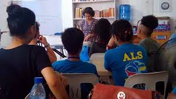

There are Committee of Youth and Sports Game in the barangay City Camp Proper where all young adults will encourage to join
and have fun. In Committee of Youth society will will teaches them to word of God and also guiding them to a goodness and righteous
path where their young minds should be. On the other hand they also have Sports Game also for young adults will the have time to
fun and also to make friends with other children. These activities were only done during summer vacation of these children.
Nutrition Month
Free Anthelmintic
Another activities of the Barangay, authorities give anthelmintic to children that usually fall on the month of July which
is wildly known for Nutrition month and also gives nutrition seminar on these children where they educated them on what are
the nutritious food that they must eat. They also prepare feeding programs for the children.
Buwan ng Wika
Talent Showcase
Another Activities which are only given to the children in day care is buwan ng wika
they’ve held a talent portion a drawing and a poem contest for them to nourish their talents as a kid
and also given the opportunity to compite with other children.
United Nation
During Month of October
Another one is on the month of October which is widely known as United Nation they’ve held a pageant and a talent portion
which every country is being represented by the children in the day care center. For the community children they held a
contest which wherein the winner of the said contest will be representing the barangay. Last two consecutive years the
representatives won. Every Christmas was a gift giving and a feeding program for the children.
Alternative Learning System
Free Schooling
On the other hand the out-of-school-youth children were given a seminar which help them decide whether to enrol for
school or to work, the Alternative Learning System (ALS) gives them scholarship if they continue their school. Another
program of the barangay is a seminar for the reproductive to teach the community children starting 12 years old about the
reproductive health. For the curfew the resident children are not that hard headed but the other district children are the
one who are caught and others are missing and declared to be a resident in the city camp.
